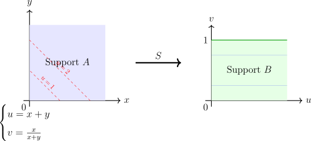
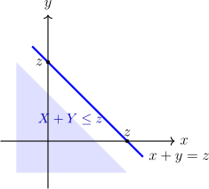
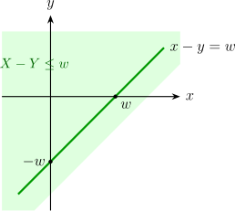

1.3 Functions of Random Variables
Suppose \((X_1, X_2, \cdots , X_k)\) are continuous random variables with joint PDF \(f(x_1, x_2, \cdots , x_n)\). Our goal is to determine the distribution of a new set of variables \((Y_1, Y_2, \cdots , Y_k)\) which are functions of the original sample: \begin {align*} Y_1 & = h_1(X_1, X_2, \cdots , X_n)\\ Y_2 & = h_2(X_1,X_2, \cdots , X_n)\\ \vdots & \\ Y_k & = h_k(X_1, X_2, \cdots , X_n) \end {align*}
We generally employ three primary techniques:
- 1.
- The CDF Technique: Best for single functions or where the geometry of the transformation is easily understood.
- 2.
- The Transformation (Jacobian) Method: Best for one-to-one multivariate mappings.
- 3.
- The Moment Generating Function (MGF) Method: Most powerful for sums of independent variables.
1.3.1 The Cumulative Distribution Function Method
This method relies on the definition of the CDF. If \(Y = g(X)\), we find the probability that \(Y \leq y\) (i.e., \(F_Y(y) = P(Y \leq y)\)) by identifying the corresponding region in the \(X\)-space and integrating the original density over that regio
Theorem 1.3.1 (The CDF Procedure). To find the PDF of \(Y = g(X_1, \dots , X_n)\):
- 1.
- Define the event: Write \(F_Y(y) = P(Y \leq y) = P(g(X_1, \dots , X_n) \leq y)\).
- 2.
- Integrate: Evaluate \(F_Y(y) = \iint \dots \int _{\mathcal {R}} f(x_1, \dots , x_n) \, dx_1 \dots dx_n\), where \(\mathcal {R}\) is the region where \(g(\mathbf {x}) \leq y\). \begin {align*} F_Y(y) & = P(Y \leq y)\\ & = P(g(X) \leq y)\\ & = P(X \leq g^{-1}(y))\\ & = F_X(g^{-1}(y)) \end {align*}
- 3.
- Differentiate: Obtain the PDF by taking the derivative \(f_Y(y) = \frac {d}{dy} F_Y(y)\). \begin {align*} f_Y(y) & = \frac {d}{dy}F_Y(y)\\ & = f_X(g^{-1}(y))\, \frac {d}{dy}(g^{-1}(y)). \end {align*}
Solution. Note that \(Y\) can only take non-negative values (\(y > 0\)). \begin {align*} F_Y(y) & = P(Y \leq y) = P(X^2 \leq y)\\ &= P(-\sqrt {y} \leq X \leq \sqrt {y})\\ &= F_X(\sqrt {y}) - F_X(-\sqrt {y}) \end {align*}
Applying the chain rule to differentiate with respect to \(y\): \begin {align*} f_Y(y) & = \frac {d}{dy} [F_X(\sqrt {y}) - F_X(-\sqrt {y})]\\ & = f_X(\sqrt {y}) \cdot \frac {1}{2\sqrt {y}} - f_X(-\sqrt {y}) \cdot \left (-\frac {1}{2\sqrt {y}}\right )\\ &= \frac {1}{2\sqrt {y}} \left [ f_X(\sqrt {y}) + f_X(-\sqrt {y}) \right ], \quad y > 0 \end {align*} □
Solution. Step 1: Find the Population CDF. For \(x > 0\): \[F_X(x) = \int _0^x 2e^{-2t} dt = 1 - e^{-2x}.\] Step 2: Transform. Since \(x > 0\), the range of \(Y = e^X\) is \(\,(e^0, \infty )\), so \(y > 1\). \begin {align*} F_Y(y) & = P(e^X \leq y) = P(X \leq \ln y)\\ &= F_X(\ln y)\\ &= 1 - e^{-2(\ln y)}\\ & = 1 - e^{\ln (y^{-2})}\\ & = 1 - y^{-2}, \quad y > 1 \end {align*}
Step 3: Differentiate. \[ f_Y(y) = \frac {d}{dy}(1 - y^{-2}) = 2y^{-3}, \quad y > 1 \] □
Example 1.3.4. Let \(X\) be a random sample from a Uniform distribution on the interval \((0, 1)\), such that: \[ f_X(x) = 1, \quad 0 < x < 1 \] Define the transformation \(Y = -2\ln X\). Find the PDF of \(Y\).
Solution. Step 1: Determine the support of \(Y\).Since \(0 < x < 1\), we evaluate the boundaries:
- As \(x \to 1\), \(Y = -2\ln (1) = 0\).
- As \(x \to 0^+\), \(Y = -2\ln (0^+) \to \infty \).
Thus, the support of \(Y\) is \(y > 0\).
Step 2: Find the CDF \(F_Y(y)\). \begin {align*} F_Y(y) &= P(Y \leq y)\\ &= P(-2\ln X \leq y)\\ &= P\left (\ln X \geq -\frac {y}{2}\right ) \quad \text {(Note: Inequality flips when dividing by -2)}\\ & = P\left (X \geq e^{-y/2}\right )\\ &= 1 - P\left (X < e^{-y/2}\right )\\ &= 1 - F_X(e^{-y/2}) \end {align*}
Since \(F_X(x) = x\) for a Uniform \((0,1)\) distribution: \[ F_Y(y) = 1 - e^{-y/2}, \quad y > 0 \] Step 3: Find the PDF \(f_Y(y)\) by differentiation. \begin {align*} f_Y(y) &= \frac {d}{dy} \left [ 1 - e^{-y/2} \right ]\\ &= 0 - \left ( e^{-y/2} \cdot -\frac {1}{2} \right )\\ &= \frac {1}{2} e^{-y/2}, \quad y > 0. \end {align*} □
Remark 1.3.5. “Does this resulting PDF look familiar?”
- 1.
- It is an Exponential Distribution with \(\lambda = 1/2\).
- 2.
- Even more importantly, this is a Chi-square distribution with 2 degrees of freedom (\(\chi ^2_{(2)}\)).
1.3.2 Transformation (Change of Variable) Method
1. The Discrete Case
In the discrete world, transformation is straightforward because we are simply re-labeling the points in the sample space.
Theorem 1.3.6 (Discrete Case). Suppose \(X\) is a discrete random variable with PF \(f_X(x)\). If \(Y = g(X)\) is a one-to-one transformation with inverse \(x = g^{-1}(y)\), then the PF of \(Y\) is: \[ f_Y(y) = f_X(g^{-1}(y)), \quad y \in \text {Support of } Y \]
Example 1.3.7. If \(X \sim \text {Geo}(p)\), where \(f_X(x) = pq^{x-1}\) for \(x = 1, 2, 3, \dots \), find the distribution of \(Y = X - 1\).
Solution. The inverse is \(x = y + 1\). Substituting this into the original PF: \[ f_Y(y) = f_X(y+1) = pq^{(y+1)-1} = pq^y, \quad y = 0, 1, 2, \dots \] Expert Note: This shifts the ”Geometric” distribution from counting the trial of the first success to counting the number of failures before the first success. □
2. The Continuous Case (Univariate)
In the continuous case, we cannot just re-label points; we must account for the change in density.
Theorem 1.3.8 (Continuous Case). Let \(X\) have PDF \(f_X(x)\). If \(Y = h(X)\) is a one-to-one transformation with a continuous, non-zero derivative, the PDF of \(Y\) is: \[ f_Y(y) = f_X(h^{-1}(y)) \cdot \left | \frac {d}{dy}h^{-1}(y) \right |\] where \(J = \frac {dx}{dy}\) is the Jacobian of the transformation.
Example 1.3.9. Suppose \(X\) follows a Beta distribution with parameters \(\alpha \) and \(\beta \). Find the PDF of \(Y = -\ln X\). \[ f_X(x) = \frac {1}{B(\alpha , \beta )} x^{\alpha - 1}(1 - x)^{\beta - 1}, \quad 0 < x < 1\]
Solution. Determine the Support of \(Y\): Since \(X \in (0, 1)\):
- As \(x \to 1\), \(y = -\ln (1) = 0\).
- As \(x \to 0^+\), \(y = -\ln (0^+) \to \infty \).
Thus, \(Y \in (0, \infty )\).
Find the Inverse Transformation: \[ y = -\ln x \implies -y = \ln x \implies x = e^{-y} \] So, \(h^{-1}(y) = e^{-y}\).
Calculate the Jacobian: \[ J = \frac {dx}{dy} = \frac {d}{dy}(e^{-y}) = -e^{-y} \] The absolute value of the Jacobian is \(|J| = e^{-y}\).
Substitute into the Transformation Formula: \(f_Y(y) = f_X(h^{-1}(y)) \cdot |J|\): \begin {align*} f_Y(y) & = \frac {1}{B(\alpha , \beta )} (e^{-y})^{\alpha - 1} (1 - e^{-y})^{\beta - 1} \cdot e^{-y}\\ & = \frac {1}{B(\alpha , \beta )} e^{-y\alpha + y} (1 - e^{-y})^{\beta - 1} e^{-y}\\ & = \frac {1}{B(\alpha , \beta )} e^{-\alpha y} (1 - e^{-y})^{\beta - 1}, \quad y > 0 \end {align*} □
3. Bivariate Transformations
When we move to two dimensions (e.g., finding the distribution of the sum or ratio of two variables), we must use the bivariate Jacobian.
Definition 1.3.10 (Bivariate Transformation). Let \((X, Y)\) have joint PDF \(f_{X,Y}(x,y)\). Let \(U = h_1(X,Y)\) and \(V = h_2(X,Y)\) be a one-to-one transformation with inverses \(x = w_1(u,v)\) and \(y = w_2(u,v)\). The joint PDF of \((U, V)\) is: \[ f_{U,V}(u,v) = f_{X,Y}(w_1(u,v), w_2(u,v)) \cdot |J| \] where the Jacobian \(J\) is the determinant: \[ J = \frac {\partial (x,y)}{\partial (u,v)} = \begin {vmatrix} \frac {\partial x}{\partial u} & \frac {\partial x}{\partial v} \\ \frac {\partial y}{\partial u} & \frac {\partial y}{\partial v} \end {vmatrix}.\]
Example 1.3.11. Let \(X\thicksim \operatorname {GAM}(a,1)\) and \(Y\thicksim \operatorname {GAM}(b,1)\). Suppose \(X\) and \(Y\) are independent.
- (i).
- Find the joint p.d.f. of \(U = X + Y\) and \(V = \frac {X}{X + Y}\).
Solution. \(X\thicksim \operatorname {GAM}(\alpha ,\beta )\) \[f_X(x) = \frac {1}{\beta ^{\alpha }\Gamma (\alpha )}\, x^{\alpha - 1}\, e^{-\frac {x}{\beta }}\, , \quad x > 0\] now \(X\thicksim \operatorname {GAM}(a,1)\) \[f_X(x) = \frac {1}{\Gamma (a)}\, x^{a - 1}\, e^{-x}\, , \quad x > 0\] \(Y\thicksim \operatorname {GAM}(b,1)\) \[f_Y(y) = \frac {1}{\Gamma (b)}\, y^{b-1}\, e^{-y}\,, \quad y > 0\] Since \(X, Y\) are independent, their joint PDF is the product of their marginals: \[ f_{X,Y}(x,y) = \frac {1}{\Gamma (a)\Gamma (b)} x^{a-1} y^{b-1} e^{-(x+y)}, \quad x, y > 0 \] We define the transformation \(u = x + y\) and \(v = x/(x+y)\). The inverse functions are: \[ x = uv \quad \text {and} \quad y = u(1-v) \] The support of the new variables is \(u > 0\) and \(0 < v < 1\).

Figure 1.3: The transformation maps the \(x,y > 0\) quadrant to a rectangular strip where \(u > 0\) and \(0 < v < 1\). The Jacobian is: \[ J = \begin {vmatrix} \frac {\partial x}{\partial u} & \frac {\partial x}{\partial v} \\ \frac {\partial y}{\partial u} & \frac {\partial y}{\partial v} \end {vmatrix} = \begin {vmatrix} v & u \\ 1-v & -u \end {vmatrix} = -uv - u(1-v) = -u \] Taking the absolute value, \(|J| = u\). Substituting into the joint PDF formula: \begin {align*} f_{U,V}(u,v) & = f_{X,Y}(uv, u(1-v)) \cdot u\\ & = \frac {1}{\Gamma (a)\Gamma (b)} (uv)^{a-1} (u(1-v))^{b-1} e^{-u} \cdot u\\ &= \frac {1}{\Gamma (a)\Gamma (b)} u^{a+b-1} e^{-u} v^{a-1} (1-v)^{b-1} \end {align*} □
- (ii).
- Are \(U\) and \(V\) independent random variables.
Solution. \begin {align*} f_{U,V}(u,v) & = u^{a + b - 1} e^{-u}\, \frac {v^{a - 1}(1 - v)^{b - 1}}{\Gamma (a)\Gamma (b)}\\ & = \underbrace {\frac {u^{a + b - 1} e^{-u}}{\Gamma (a + b)}}_{f_U(u)} \, \times \, \underbrace {\frac {\Gamma (a + b)\, v^{a - 1}(1 - v)^{b - 1}}{\Gamma (a)\Gamma (b)}}_{f_V(v)}\, , \quad \quad u>0, \, 0 < v < 1 \end {align*}
support is rectangular \(\{u: \, u>0\}\times \{v:\, 0 < v < 1\}\).
Therefore, by the factorization theorem of independence \(U\) and \(V\) are independent. □
- (iii).
- Find the marginal PDF of \(U\) and the marginal PDF of \(V\).
Solution. \begin {align*} f_U(u) & = \int _vf_{U,V}(u,v)\, dv\\ & = \int ^1_0u^{a + b - 1} e^{-u}\,\frac {v^{a - 1}(1 - v)^{b-1}}{\Gamma (a)\Gamma (b)}\, dv\\ & = \frac {u^{a + b -1}e^{-u}}{\Gamma (a)\Gamma (b)}\int ^1_0v^{a-1}(1- v)^{b - 1}\, dv\\ & = \frac {u^{a + b - 1}e^{-u}}{\Gamma (a)\Gamma (b)}\, \frac {\Gamma (a)\Gamma (b)}{\Gamma (a + b)}\\ & = \frac {u^{a + b - 1} \, e^{-u}}{\Gamma (a + b)}\, , \quad \quad u > 0\quad \text {i.e.}\quad U\thicksim \operatorname {GAM}(a + b ,1). \end {align*}
\begin {align*} f_V(v) & = \int _uf_{U,V}(u,v)\, du\\ & = \int ^{\infty }_0 u^{a + b - 1}e^{-u}\, \frac {v^{a - 1} (1 - v)^{b - 1}}{\Gamma (a)\Gamma (b)}\, du\\ & = \frac {v^{a - 1}(1 - v)^{b - 1}}{\Gamma (a)\Gamma (b)} \int ^{\infty }_0u^{a + b -1}e^{-u}\, du\\ & = \frac {v^{a - 1}(1 - v)^{b - 1}}{\Gamma (a)\Gamma (b)}\,\Gamma (a + b)\\ & = \frac {v^{a - 1}\, (1 - v)^{b - 1}}{B(a,b)}\, , \quad 0 < v < 1. \end {align*}
i.e. \(\, V \thicksim \operatorname {BETA}(a,b)\). □
- 1.
- \(E[V] = \frac {a}{a+b}\).
- 2.
- \(\text {Var}(V) = \frac {ab}{(a+b)^2(a+b+1)}\).
- 3.
- \(E[U] = a+b\) and \(\text {Var}(U) = a+b\).
4. Discrete Bivariate Transformations
In the discrete case, we simply perform a point-to-point mapping. The key challenge for learners is usually correctly identifying the new support (the bounds of the summation).
Definition 1.3.13. Suppose \(f(x,y)\) is a joint p.f. of discrete random variables \(X\) and \(Y\). Let \(U = h_1(X,Y)\) and \(V = h_2(X,Y)\) define a one-to-one transformation from \(A = \{(x,y)\, |\, f(x,y) > 0\}\) onto \(B = \{(u,v)\, |\, g(u,v) > 0\}\). Then, the joint p.f. of \(U = h_1(X,Y)\) and \(V = h_2(X,Y)\) is given by \[g(u,v) = f_{X,Y}\left [w_1(u,v), w_2(u,v)\right ]\, , \quad (u,v)\in B\] where \(x = w_1(u,v)\) and \(y = w_2(u,v)\) are inverses of \(u = h_1(x,y)\) and \(v = h_2(x,y)\) respectively.
Example 1.3.14. Given that \(X\) and \(Y\) have joint PF \[f(x,y) = \frac {1}{36}xy, \quad x = 1, 2, 3;\, y = 1, 2, 3.\] Find the joint PF of \(U = XY\) and \(V = Y\)
Solution. Inverse Transformation: \(v = y \implies y = v\) and \(u = xy \implies x = u/v\).
Substituting: \[ g(u,v) = \frac {1}{36} \left (\frac {u}{v}\right )v = \frac {u}{36} \]
The possible values for \(v\) are \(\{1, 2, 3\}\). For each \(v\), \(x\) must be in \(\{1, 2, 3\}\). Since \(u = xv\), if \(v=1, u \in \{1,2,3\}\); if \(v=2, u \in \{2,4,6\}\); if \(v=3, u \in \{3,6,9\}\). The support is \[B = \{(u,v) : v \in \{1,2,3\}, u/v \in \{1,2,3\}\}.\]
| \(U \setminus V\) | 1 | 2 | 3 | \(f_U(u)\) |
| 1 | \(1/36\) | 0 | 0 | \(1/36\) |
| 2 | \(2/36\) | \(2/36\) | 0 | \(4/36\) |
| 3 | \(3/36\) | 0 | \(3/36\) | \(6/36\) |
| 4 | 0 | \(4/36\) | 0 | \(4/36\) |
| 6 | 0 | \(6/36\) | \(6/36\) | \(12/36\) |
| 9 | 0 | 0 | \(9/36\) | \(9/36\) |
| \(f_V(v)\) | \(6/36\) | \(12/36\) | \(18/36\) | 1 |
Example 1.3.15. Let \(X\) and \(Y\) be independent Poisson random variables with means \(\mu \) and \(\lambda \) respectively. Find the
- (i).
- Joint PF. of \(U = X + Y\) and \(V = Y\),
Solution. \[f_X(x) = \frac {e^{-\mu }\, \mu ^x}{x!}\, , \quad x = 0, 1, 2, \cdots \] \[f_Y(y) = \frac {e^{-\lambda }\, \lambda ^y}{y!}\, , \quad y = 0, 1, 2, \cdots \] The joint is \[f_{X,Y}(x,y) = \frac {e^{-(\mu + \lambda )}\, \mu ^x\, \lambda ^y}{x!\, y!}\, , \quad x = 0, 1, \cdots ; y = 0, 1, 2, \cdots \] \[f_{U,V}(u,v) = f_{X,Y}(x(u,v), y(u,v))\] \(u = x + y\) and \(v = y\), then \(y = v\) and \(x = u-v\). \[f_{U,V}(u,v) = \frac {e^{-(\mu + \lambda )}\, \mu ^{u-v}\, \lambda ^v}{(u - v)!\, v!}\, \, , \quad u = 0, 1, 2, \cdots ;\, v = 0, 1, 2, \cdots , u\] \begin {align*} x > 0 & \implies & u - v > 0 & \implies u>v\\ y > 0 & \implies & v > 0 &\\ \end {align*} □
- (ii).
- Marginal PF of \(U\).
Solution. \begin {align*} f_U(u) & = \sum _{\text {all}\, v} f_{U,V}(u,v)\\ & = \sum _{v = 0}^u\frac {e^{-(\mu + \lambda )}\mu ^{u - v}\lambda ^v}{(u-v)!\, v!}\\ & = e^{-(\mu + \lambda )} \mu ^u\sum _{v = 0}^u\frac {1}{(u-v)!v!}\left (\frac {\lambda }{\mu }\right )^v\\ & = \frac {e^{-(\mu + \lambda )} \mu ^u}{u!}\sum _{v = 0}^u\frac {u!}{(u-v)!v!}\left (\frac {\lambda }{\mu }\right )^v\\ & = \frac {e^{-(\mu + \lambda )} \mu ^u}{u!}\sum _{v = 0}^u\binom {u}{v}\left (\frac {\lambda }{\mu }\right )^v\\ & = \frac {e^{-(\mu + \lambda )} \mu ^u}{u!}\left (1 +\frac {\lambda }{\mu }\right )^u\quad \quad U\thicksim \operatorname {POI}(\mu + \lambda )\\ & = \frac {e^{-(\mu + \lambda )} \mu ^u}{u!}\frac {(\mu + \lambda )^{\mu }}{\mu ^u}\\ & = \frac {e^{-(\mu + \lambda )}\,(\mu + \lambda )^n}{u!}\, , \quad u = 0, 1, 2, \cdots \end {align*} □
1.3.3 Distributions of Sum and Difference of Random Variables
When we are interested in the distribution of \(Z = X + Y\) or \(W = X - Y\), we are essentially summing the probability density along the lines of the transformation in the \(xy\)-plane.
Theorem 1.3.16. Let \(X\) and \(Y\) be continuous random variables with joint probability density function \(f_{X,Y}(x,y)\).
- (a).
- If \(Z = X + Y\), then: \[f_Z(z) = \int _X f_{X,Y}(x,z-x)\,dx = \int _Y f_{X,Y}(z-y,y)\, dy\, ,\quad Z\in A\]
Proof. The CDF is the volume under the joint density over the region where \(x + y \leq z\): \[F_Z(z) = P(Z\leq z) = P(X + Y \leq z)\]

Figure 1.4: Integration region for the sum \(Z = X + Y\). \begin {align*} F_Z(z) = \iint \limits _{X+Y \leq Z} f_{X,Y}(x,y)dx\, dy = \int \limits _Y \int ^{z-y}_{-\infty }f_{X,Y}(x,y)\, dx\,dy = \int \limits _X \int ^{z-x}_{-\infty }f_{X,Y}(x,y)\, dy\,dx. \end {align*}
Differentiating \begin {align*} f_Z(z) & = \frac {\partial }{\partial z} \int \limits _Y \int ^{z-y}_{-\infty }f_{X,Y}(x,y)\, dx\, dy = \int \limits _Y \left [ \frac {\partial }{\partial z}\int ^{z-y}_{-\infty }f_{X,Y}(x,y)\, dx\right ]\,dy = \int \limits _Y f_{X,Y}(z-y,y)\,dy. \end {align*} □
- (b).
- If \(W = X - Y\), then: \[f_W(w) = \int _X f_{X,Y}(x,w+x)\,dx = \int _Y f_{X,Y}(w+y,y)\, dy\, ,\quad Z \in B.\]
Proof. \(F_W(w) = P(W\leq w) = P(X - Y \leq w)\)

Figure 1.5: Integration region for the difference \(W = X - Y\), with visible axes. \[F_W(w) = \iint \limits _{X - Y \leq W} f_{X,Y}(x,y)\, dy\, dx = \int \limits _X\int ^{\infty }_{X-W} f_{X,Y}(x,y) \, dy \, dx.\]
Let \(y = x- u\) \(dy = -du\)
\[F_W(w) = \int \limits _X \int ^{-\infty }_{w} (x, x - u)\, (-1)du\, dx = \int \limits _X \int ^w_{-\infty } (x, x - u)\, du\, dx\] Then the PDF \[f_W(w) = \frac {\partial }{\partial w}F_W(w) = \int \limits _X \left ( \frac {\partial }{\partial w}\int _{-\infty }^{w} (x, x - u)\, du\right )\, dx = \int \limits _X f_{X,Y}(x,x+w)\, dx.\] □
Corollary 1.3.17 (The Convolution Formula). If \(X\) and \(Y\) are independent continuous random variables, the joint PDF factors into \(f_X(x)\, f_Y(y)\), then the PDFs for \(Z = X + Y\) and \(W = X - Y\) are standard convolution integrals:
- 1.
- \(\displaystyle {f_Z(z) = \int _x f_X(x)f_Y(z-x)dx = \int _y f_X(z-y)f_Y(y)dy}\)
- 2.
- \(\displaystyle {f_W(w) = \int _x f_X(x)f_Y(x-w)dx = \int _y f_X(w + y)f_Y(y)dy}\)
Example 1.3.18. Let \(X\) and \(Y\) be independent exponential random variables each with mean \(\lambda \). Find the distribution of \(X+Y\).
Solution. \(f_{X,Y}(x,y) = f_X(x)\cdot f_Y(y)\)
\[f_X(x) = \frac {1}{\lambda }\, e^{-x/\lambda } \quad \text {and}\quad f_Y(y) = \frac {1}{\lambda }\hspace {0.1cm}e^{-y/\lambda }\] Let \(Z = X + Y \) , then
\begin {align*} f_Z(z) = \int \limits _x f_X(x) f_Y(z-x)\, dx & = \int \limits _x \frac {1}{\lambda } e^{-x/\lambda } \cdot \frac {1}{\lambda } e^{-(z-x)/\lambda } dx\\ & = \int \limits _x \frac {1}{\lambda ^2} e^{-z/\lambda } dx\\ & = \int ^z_0 \frac {1}{\lambda ^2} e^{-z/\lambda } dx.\\ & = \frac {z}{\lambda ^2} e^{-z/\lambda }\, , \quad z>0,\, \lambda > 0. \end {align*}
\[f_Z(z) = \frac {z^{2-1}}{\lambda ^2}e^{-3/\lambda } \thicksim \operatorname {GAM}(z,\lambda )\] Thus, \(X + Y \thicksim \operatorname {GAM}(z,\lambda )\). □
Note 1.3.19. Let \(X_1, X_2, \cdots , X_k\) be a random sample, if \(X_i \thicksim \operatorname {GAM}(\alpha _i, \lambda )\) then \[z = \sum ^k_{i=1}X_i \thicksim g\left ( \sum ^n_{i=1} \alpha _i, \lambda \right ).\]
Example 1.3.20. Let \(X\) and \(Y\) be two independent standard normals, find the distribution of \(X-Y\).
Solution. \(f_X(x) = \frac {1}{\sqrt {2\pi }}e^{-\frac {1}{2}x^2}\) and \(f_Y(y) = \frac {1}{\sqrt {2\pi }}e^{-\frac {1}{2}y^2}.\)
Let \(W = X - Y\), then \begin {align*} f_W(w) & = \int ^{\infty }_{-\infty } f_X(w+y)f_Y(y) dy\\ & = \int ^{\infty }_{-\infty } \frac {1}{\sqrt {2\pi }}\exp \left \{-\frac {1}{2}(w + y)^2\right \}\cdot \frac {1}{\sqrt {2\pi }}\exp \left \{-\frac {1}{2}y^2\right \}\, dy\\ & = \frac {1}{2\pi } \int ^{\infty }_{-\infty } \exp \Big \{ -\frac {1}{2}(w^2 + 2yw + 2y^2)\Big \}\, dy\\ & = \frac {\exp \Big \{-\frac {1}{2}w^2\Big \}}{2\pi } \int ^{\infty }_{-\infty } \exp \Big \{-\frac {2}{2}\Big (y^2 + yw + \Big (\frac {1}{2}w\Big )^2 - \Big (\frac {1}{2}w\Big )^2\Big )\Big \}\, dy \\ & = \frac {\exp \Big \{-\frac {1}{2}w^2\Big \}}{2\pi } \int ^{\infty }_{-\infty } \exp \Big \{-\Big (y + \frac {1}{2}w\Big )^2\Big \}\cdot \exp \Big \{\frac {1}{4}w^2\Big \}\, dy\\ & = \frac {e^{-\frac {1}{4}w^2}}{\sqrt {2\pi }}\cdot \sqrt {2\pi } \underbrace {\int ^{\infty }_{-\infty } \frac {1}{\sqrt {2 \pi \cdot 1/2}}\exp \Big \{-\frac {1}{2}\cdot \frac {(y + \frac {1}{2}w)^2}{1/2}\Big \}\, dy}_1 \end {align*}
Therefore \[f_W(w) = \frac {e^{-\frac {1}{4}w^2}}{\sqrt {4\pi }}\, ,\quad \quad -\infty < w < \infty \quad N(0,2)\] □
Exercise 1.3.21. Let \(X\) and \(Y\) be independent random variables where \(X\thicksim \operatorname {GAM}(\alpha _1, \lambda )\) and \(Y\thicksim \operatorname {GAM}(\alpha _2, \lambda )\), then \(X + Y \thicksim \operatorname {GAM}(\alpha _1 + \alpha _2, \lambda )\).
1.3.4 Distributions of Products and Quotients of Random Variables
Theorem 1.3.22. Let \(X\) and \(Y\) be jointly distributed continuous random variables with pdf \(f_{X,Y}(x,y)\) and let \(Z=\frac {Y}{X}\) and \(W = XY\) then
- 1.
- \(\displaystyle {f_Z(z) = \int \limits _X |x|\,f_{X,Y}(x,xz)\,dx}\)
- 2.
- \(\displaystyle {f_W(w) = \int \limits _X\frac {1}{|x|}f\left (x,w/x\right )\, dx = \int \limits _Y \frac {1}{|y|}f_{X,Y}\left (w/y,y\right )\, dy}\)
Corollary 1.3.23. Let \(X\) and \(Y\) be independent continuous random variables, with p.d.f. \(f_X(x)\) and \(f_Y(y)\), respectively. Assume that \(X\) is zero for at most a set of isolated point. Let \(Z = \frac {Y}{X}\). Then \[f_Z(z) = \int ^{\infty }_{-\infty }|x|\, f_X(x)\,f_Y(zx), dx.\]
Proof. \begin {align*} F_(Z) & = P(Y/X \leq z)\\ & = P(Y/X \leq z\quad \text {and}\quad X\geq 0) + P(Y/X\leq z \quad \text {and}\quad X<0)\\ & = P(Y \leq zX\quad \text {and}\quad X\geq 0) + P(Y\geq zX \quad \text {and}\quad X<0)\\ & = P(Y \leq zX\quad \text {and}\quad X\geq 0) \,+\, 1- P(Y\leq zX \quad \text {and}\quad X<0)\\ & = \int _0^{\infty }\int _{-\infty }^{zx} f_X(x)\, f_Y(y)\, dy dx\, +\, 1 - \int ^0_{-\infty }\int _{-\infty }^{zx} f_X(x)f_Y(y)\, dy dx. \end {align*}
Differentiating \(F_Z(z)\) we obtain \begin {align*} f_Z(z) & = \frac {d}{dz}F_Z(z)\\ & =\frac {d}{dz}\int _0^{\infty }\int _{-\infty }^{zx}f_X(x) f_Y(y)\, dy dx - \frac {d}{dz}\int _{-\infty }^0\int _{-\infty }^{zx}f_X(x)f_Y(y)\, dy dx\\ & = \int ^{\infty }_0f_X(x)\left (\frac {d}{dz}\int _{-\infty }^{zx} f_Y(y)\, dy\right )dx - \int ^0_{-\infty }f_X(x)\left (\frac {d}{dz}\int ^{zx}_{-\infty } f_Y(y) dy\right )dx \end {align*}
Note that by the Fundamental Theorem of Calculus and the chain rule, we find \[\frac {d}{dz}\int _{-\infty }^{zx}f_Y(y)\, dy = f_Y(zx)\, \frac {d}{dz}(zx) = xf_Y(zx).\] Hence \begin {align*} f_Z(z) & = \int ^{\infty }_0xf_X(x)f_Y(zx)\, dx - \int ^0_{-\infty }xf_X(x)f_Y(zx)\, dx\\ & = \int ^{\infty }_0xf_X(x)f_Y(zx)\, dx + \int ^0_{-\infty }(-x)f_X(x)f_Y(zx)\, dx\\ & = \int ^{\infty }_0|x|f_X(x)f_Y(zx)\, dx + \int ^0_{-\infty }|x|f_X(x) f_Y(zx)\, dx\\ & = \int ^{\infty }_{-\infty }|x|\, f_X(x)f_Y(zx)\, dx. \end {align*} □
Example 1.3.24. Let \(X\) and \(Y\) be independent random variables with p.d.fs \(f_X(x) = \lambda e^{-\lambda x}\, ,\, x > 0\), and \(f_Y(y) = \lambda e^{-\lambda y}\,,\, y > 0\), respectively. Define \(Z = Y/X\). Find \(f_Z(z)\).
Solution. We can write \begin {align*} f_Z(z) & = \int ^{\infty }_0x(\lambda e^{-\lambda zx}(\lambda e^{-\lambda zx})\, dx\\ & = \lambda ^2\int ^{\infty }_0xe^{-\lambda (1 + z)x}\, dx\\ & = \frac {\lambda ^2}{\lambda (1 + z)}\int ^{\infty }_0x\lambda (1 + z)e^{-\lambda (1 + z)x}\, dx\\ & = \frac {\lambda ^2}{\lambda (1 + z)}\cdot \frac {1}{\lambda (1+z)}\int ^{\infty }_0t e^{-t}\, dt,\quad \quad \text {letting} \,\, t = x\lambda (1 + z)\\ & = \frac {\lambda ^2}{\lambda ^2 (1 + z)^2}\, 1!\\ & = \frac {1}{(1+z)^2}\, , \quad z\geq 0 \end {align*} □
Theorem 1.3.25. If \(X\) and \(Y\) are discrete random variables having joint distribution function \(f_{X,Y}(x,y)\). Let \(Z = X + Y \) and \( W = X - Y\), then \begin {align*} f_Z(z) = P(Z= z) & = \sum _X f_{X,Y} (x,z -x)\\ & = \sum _X P(X = x, Y = z -x)\\ & = \sum _Y f_{X,Y} (z-y,y)\\ & = \sum _Y P(X = z - y, Y =y). \end {align*}
and \begin {align*} f_W(w) = P(W = w) & = \sum _X f_{X,Y} (x, x - w)\\ & = \sum _Y f_{X,Y} (w +y,y). \end {align*}
Example 1.3.26. The joint probability function of \(X\) and \(Y\) is given in the table below
| \(X\) | 1 | 2 | 3 | 4 | \(f_X(x)\) |
| 1 | 0.10 | 0.05 | 0.02 | 0.02 | 0.19 |
| 2 | 0.05 | 0.20 | 0.05 | 0.20 | 0.5 |
| 3 | 0.02 | 0.05 | 0.02 | 0.04 | 0.13 |
| 4 | 0.02 | 0.02 | 0.04 | 0.10 | 0.18 |
| \(f_Y(y)\) | 0.19 | 0.32 | 0.13 | 0.36 |
Find the distribution of \(Z = X + Y \) and \(W = X - Y\).
Solution. The distribution for \(Z\) is
| \(Z\) | 2 | 3 | 4 | 5 | 6 | 7 | 8 |
| \(f_Z(z)\) | 0.10 | 0.10 | 0.24 | 0.14 | 0.24 | 0.08 | 0.10 |
and for \(W\) is
| \(W\) | \(-3\) | \(-2\) | \(-1\) | 0 | 1 | 2 | 3 |
| \(f_W(w)\) | 0.02 | 0.22 | 0.14 | 0.42 | 0.14 | 0.04 | 0.02 |
1.3.5 Moment Generating Function Method
The power of the MGF method lies in the property that the MGF of a sum of independent variables is the product of their individual MGFs.
Theorem 1.3.27. If \(X_1, X_2, \cdots , X_n\) are independent random variables with MGFs \(M_{X_i}(t)\) then the MGF of \(Y = \sum ^n_{i = 1}X_i\) is \[M_{Y}(t) = M_{X_1}(t)\, M_{X_2}(t)\, \cdots \, M_{X_n}(t).\]
Proof. \begin {align*} M_Y(t) & = E(e^{tY})\\ & = E\left (e^{t(X_1 + X_2 + \cdots + X_n)}\right )\\ & = E\left (e^{tX_1 + tX_2 + \cdots + tX_n}\right )\\ & = E\left (e^{tX_1}\right ) E\left (e^{tX_2}\right ) \cdots E\left (e^{tX_n}\right )\quad \quad \text {since the}\,\,\, X_i's\,\,\, \text {are independent}\\ & = M_{X_1}(t)\, M_{X_2}(t)\, \cdots \, M_{X_n}(t) \end {align*} □
Note 1.3.28. If \(X_1, X_2, \cdots , X_n\) are i.i.d. random variables each with MGF. \(M_X(t)\), then the MGF of \(Y\) is \[M_Y(t) = \left [M_X(t)\right ]^n.\]
Special Results:
These results are frequently used in sampling theory and are derived directly from the MGF properties:
- 1.
- If \(X\thicksim \operatorname {GAM}(\alpha ,\beta )\), where \(\alpha \) is positive, then \[\frac {2X}{\beta } \thicksim \chi ^2(2\alpha ).\]
- 2.
- If \(X_i \thicksim \operatorname {GAM}(\alpha _i,\beta )\), \(i = 1, 2, \cdots , n\) independently then \[\sum ^n_{i = 1} X_i \thicksim \operatorname {GAM}\left (\sum ^n_{i = 1} \alpha _i, \beta \right ).\]
- 3.
- If \(X_i \thicksim \operatorname {GAM}(1,\beta ) = \operatorname {EXP}(\beta )\), \(i = 1, 2, \cdots , n\) independently, then \[\sum ^n_{i = 1}X_i \thicksim \operatorname {GAM}(n,\beta ).\]
- 4.
- If \(X_i \thicksim \operatorname {N}(\mu ,\sigma ^2)\), \(i = 1, 2, \cdots , n\) independently, then \[\sum ^n_{i = 1}\left (\frac {X_i - \mu }{\sigma }\right )^2\,\thicksim \, \chi ^2_{(n)}.\]
Example 1.3.29. Let \(X_1, X_2, \, \cdots , \, X_n\) be independent Poisson-distributed random variables, \(X_i \thicksim \operatorname {POI}(\mu _i)\). Show that \[Y = \sum ^n_{i = 1} X_i \, \thicksim \, \operatorname {POI}\left (\sum ^n_{i = 1} \mu _i\right ).\]
Solution. \[f_{X_i}(x_i) = \frac {e^{-\mu _i}\, \mu _i^{x_i}}{x_i!}\, , \quad x_i = 0, 1, 2, \cdots \] Recall that \[M_{X_i}(t) = e^{\mu _i(e^t - 1)}\] now \begin {align*} M_Y(t) & = \prod ^n_{i =1} M_{X_i}(t)\\ & = \prod ^n_{i =1} e^{\mu _i(e^t-1)}\\ & = e^{\left (\sum ^n_{i =1}\mu _i\right )(e^t - 1)} \end {align*}
Therefore, \(\, Y \thicksim \operatorname {POI}\left (\sum ^n_{i = 1}\mu _i\right )\). □
- 1.
- Let \(X_1, X_2, \cdots , X_n\) be independent binomial random variables, \(X_i\thicksim \operatorname {BIN}(n_i,p)\). Show that \[Y = \sum ^n_{i = 1}X_i \thicksim \operatorname {BIN}\left (\sum ^n_{i = 1}n_i,p\right ).\]
- 2.
- If \(X_1, X_2, \cdots , X_n\) are independent negative binomial random variables, \(X_i \thicksim \operatorname {NB}(k_i,p)\), show that \[Y = \sum ^n_{i = 1} X_i \thicksim \operatorname {NB}\left (\sum ^n_{i = 1}k_i,p\right ).\]
Theorem 1.3.31. Let \(X_1, X_2, \cdots , X_n\) be independent normally distributed random variables, \(X_i \thicksim \operatorname {N}(\mu _i,\sigma _i^2)\), then \[\sum ^n_{i = 1}a_iX_i \, \thicksim \, \operatorname {N}\left (\sum ^n_{i = 1} a_i\mu _i, \sum ^n_{i = 1}a_i^2\sigma ^2_i\right ).\]
Proof. Recall \[M_{X_i}(t) = e^{\mu _i t + \frac {1}{2}\sigma ^2_it^2}\] Let \(Y = \sum ^n_{i = 1} a_i X_i\) \begin {align*} M_Y(t) & = E\left (e^{tY}\right )\\ & = E\left (e^{t\sum ^n_{i = 1}a_iX_i}\right )\\ & = \prod ^n_{i = 1}E\left (e^{ta_iX_i}\right )\\ & = \prod ^n_{i = 1}e^{\mu _ia_it + \frac {1}{2}\sigma ^2_ia^2_it^2}\\ & = e^{\left (\sum ^n_{i =1}\mu _ia_i\right )t + \frac {1}{2}\left (\sum ^n_{i = 1}\sigma ^2_ia^2_i\right )t^2} \end {align*}
Therefore \[Y = \sum ^n_{i = 1} a_iX_i \, \thicksim \, \operatorname {N}\left (\sum ^n_{i = 1}a_i \mu _i\, , \, \sum ^n_{i = 1} a_i^2\sigma ^2_i\right ).\] □
Corollary 1.3.32. If \(X_i\overset {iid}{\thicksim }\operatorname {N}(\mu ,\sigma ^2)\), then \[\sum ^n_{i = 1} X_i \thicksim \operatorname {N}(n\mu , n\sigma ^2)\] and \[\overline {X} = \frac {1}{n}\sum ^n_{i = 1}X_i \thicksim \operatorname {N}(\mu , \frac {\sigma ^2}{n}).\]
Proof. \(M_{X_i}(t) = e^{\mu t + \frac {1}{2}\sigma ^2 t^2}\)
Let \(\, Y = \sum ^n_{i = 1} X_i\) \begin {align*} M_Y(t) & = E(e^{tY})\\ & = E\left (e^{t\sum ^n_{i = 1} X_i}\right )\\ & = \left [M_X(t)\right ]^n\\ & = \left (e^{\mu t + \frac {1}{2}\sigma ^2 t^2}\right )^n\\ & = e^{n\mu t + \frac {1}{2}n\sigma ^2t^2}. \end {align*}
Therefore \[Y = \sum ^n_{i = 1}X_i \thicksim \operatorname {N}(n\mu , n\sigma ^2)).\] □
Theorem 1.3.33. If \(\, X \thicksim \chi ^2(n)\) then \[f(x) = \frac {1}{2^{\frac {n}{2}}\Gamma \left (\frac {n}{2}\right )}\, x^{\frac {n}{2}-1}\, e^{-\frac {x}{2}}\, , \quad x > 0\] and \[M_X(t) = \left (\frac {1}{1-2t}\right )^{\frac {n}{2}}\,, \quad E(X) = n\, , \quad \operatorname {Var}(X) = 2n.\]
Proof. \begin {align*} M_X(t) & = E\left (e^{tX}\right )\\ & = \int ^{\infty }_0e^{tx}\, \frac {x^{\frac {n}{2-1}}\, e^{-\frac {x}{2}}}{2^{\frac {n}{2}}\, \Gamma \left (\frac {n}{2}\right )}\, dx\\ & = \frac {1}{2^{\frac {n}{2}}\, \Gamma \left (\frac {n}{2}\right )}\,\int _0^{\infty }x^{\frac {n}{2}-1}\, e^{-(\frac {1}{2}-t)x}\, dx\\ & = \frac {1}{2^{\frac {n}{2}}\, \Gamma \left (\frac {n}{2}\right )}\,\int _0^{\infty }\left (\frac {y}{\frac {1}{2}-t}\right )^{\frac {n}{2}-1}\, e^{-y}\, \frac {dy}{\frac {1}{2}-t}\, ,\quad \text {letting}\,\, y = (\frac {1}{2}-t)x\\ & = \frac {1}{2^{\frac {n}{2}}\Gamma \left (\frac {n}{2}\right )}\, \frac {1}{\left (\frac {1}{2}-t\right )^{\frac {n}{2}}}\int _0^{\infty } y^{\frac {n}{2}-1}\, e^{-y}\, dy \, , \quad t > \frac {1}{2}\\ & = \frac {\Gamma \left (\frac {n}{2}\right )}{\Gamma \left (\frac {n}{2}\right ) (1-2t)^{\frac {n}{2}}}\\ & = \left (\frac {1}{1-2t}\right )^{\frac {n}{2}}\, , \quad \quad t > \frac {1}{2}. \end {align*}
\[M'_X(t) = -\frac {n}{2}(1 - 2t)^{-\frac {n}{2}-1}(-2) = n(1 - 2t)^{-\frac {n}{2}-1}.\]
\[M''_X(t) = n\left (-\frac {n}{2}-1\right )(1-2t)^{-\frac {n}{2}-2}(-2) = 2n\left (\frac {n}{2} + 1\right )(1 - 2t)^{-\frac {n}{2}-2}.\]
\[E(X) = M'_X(0) = n.\]
\[E(X^2) = M''_X(0) = 2n\left (\frac {n}{2} + 1\right ).\]
\[\operatorname {Var}(X) = 2n\left (\frac {n}{2}+1\right ) - n^2 = n^2 + 2n -n^2 = 2n.\] □
1.3.6 Distribution of \(t\),\(\chi ^2\) and \(F\) Random Variables
Definition 1.3.34 (Chi-squared distribution \(\chi ^2\)). A random variable \(X\) with the following pdf is known as a chi-squared with \(k\) degrees of freedom \[f_X(x) = \frac {x^{\frac {k}{2}-1}e^{-\frac {x}{2}}}{\Gamma \left (\frac {k}{2}\right )\, 2^{\frac {k}{2}}}\,\, , \quad x>0.\]
- 1.
- If \(Y \thicksim \operatorname {GAM}( \alpha , \lambda )\) , then \[f_Y(y) = \frac {y^{\alpha -1} \lambda ^{\alpha } e^{-\lambda y}}{\Gamma (\alpha )} \, , \quad y>0\] Therefore a chi-square with \(k\) degrees of freedom is a gamma with \(\alpha = \frac {k}{2}\) and \(\lambda = \frac {1}{2}\).
- 2.
- \(E(Y) = \frac {\alpha }{\lambda }\) and \(\operatorname {Var}(Y) = \frac {\alpha }{\lambda ^2}\). Therefore \(E(X) = \frac {k/2}{1/2} = k\) and \(\operatorname {Var}(X) = \frac {k/2}{(1/2)^2} = 2k\).
- 3.
- Thus the mean of a chi-square is equal to its degrees of freedom while the variance is
twice its degrees of freedom.
- 4.
- \(M_Y(t) = \left ( \frac {\lambda }{\lambda - t}\right )^{\alpha }\)
Therefore \[M_X(t) = \left (\frac {\frac {1}{2}}{\frac {1}{2}-t}\right )^{\frac {k}{2}} = \left (\frac {1}{1-2t}\right )^{\frac {k}{2}} = \left (\frac {1}{\sqrt {1 - 2t}}\right )^k.\]
Theorem 1.3.36. If the random variables \(X_1, X_2, \cdots , X_k\) are independent and normally distributed with \(X_j\) having mean \(\mu _j\) and variance \(\sigma _j^2\) i.e \(X_j'\)s and \(N(\mu _j, \sigma ^2_j)\) then \[W = \sum ^k_{j=1}\left (\frac {X_j - \mu _j}{\sigma _j}\right )^2\] has a chi-square distribution with \(k\) degrees of freedom.
Remark 1.3.37. If \(Z_j = \frac {X_j - \mu _j}{\sigma _j}\) then \(Z_j \thicksim N(0,1), \quad j = 0, 1, 2, \cdots , k\) then \(Z_j\) is standard normal. Therefore chi-square is a sum of squares of independent standard normals.
Proof. We find the m.g.f of \(W\) \begin {align*} M_W(t) = E\left (e^{tw}\right ) & = E\left ( e^{t\sum ^k_{j=1}\left (\frac {X_j-\mu _j}{\sigma _j}\right )^2}\right )\\ & = E\left ( e^{\sum \limits ^k_{j=1} Z_j^2t}\right )\,\,\quad \text {where}\quad Z_j= \frac {X_j - \mu _j}{\sigma _j}\\ & = E\left ( \prod ^k_{j=1} e^{tZ^2_j}\right )\\ & = \prod ^k_{j=1} E\left (e^{tZ^2_j}\right )\\ & = \left [E\left (e^{tZ^2}\right )\right ]^k\quad , \quad Z \thicksim N(0,1) \end {align*}
now find \begin {align*} E\left (e^{tz^2}\right ) & = \int ^{\infty }_{-\infty } e^{tZ^2}\, f_Z(z)\, dz\\ & = \int ^{\infty }_{-\infty } e^{tz^2}\, \frac {1}{\sqrt {2\pi }}e^{-\frac {1}{2}z^2}\,dz\\ & = \int ^{\infty }_{-\infty } \frac {1}{\sqrt {2 \pi }}e^{-\frac {1}{2}(1 - 2t)z^2}\, dz\\ & = \int ^{\infty }_{-\infty } \frac {1}{\sqrt {2\pi }}e^{-\frac {1}{2} u^2} \, \frac {du}{\sqrt {1 - 2t}}\, ,\quad \quad \text {letting}\,\, u = \sqrt {1 - 2t}\,z\\ & = \frac {1}{\sqrt {1 - 2t}}\underbrace {\int ^{\infty }_{-\infty } \frac {1}{\sqrt {2\pi }}e^{-\frac {1}{2} u^2} \, du}_1\\ & = \frac {1}{\sqrt {1 - 2t}}. \end {align*}
Therefore, \[M_w(t) = \left [E\left (e^{tz^2}\right )\right ]^k = \left [ \frac {1}{\sqrt {1 - 2t}}\right ]^k\] By uniqueness theorem of m.g.f. \(W\) has a chi-square distribution with \(k\) degrees of freedom. □
Corollary 1.3.38. If \(X_1, X_2,\cdots , X_n\) is a random sample from \(N\thicksim (\mu , \sigma ^2)\) then \[M = \sum ^n_{j=1} \left ( \frac {X_j - \mu }{\sigma }\right )^2 \thicksim \chi ^2_n.\]
Definition 1.3.39 (\(F\)-Distribution). If a random variable \(X\) has the following p.d.f. \[f_X(x) = \frac {\Gamma \left (\frac {m + n}{2}\right )\, \left (\frac {m}{n}\right )^{\frac {m}{2}}\, x^{\frac {m}{2}-1}}{\Gamma \left (\frac {m}{2}\right )\,\Gamma \left (\frac {n}{2}\right )\, \left (1 + \frac {m}{n}x\right )^{\frac {m+n}{2}}}\, , \quad x>0\] then \(X\) has an \(F -\) distribution with \(m\) degrees of freedom in the numerator and \(n\) degrees of freedom in the denominator.
Theorem 1.3.40. If \(U\) and \(V\) are independent chi-square random variables with \(m\) and \(n\) degrees of freedom respectively then \(X = \frac {U/m}{V/n}\) has \(F -\) distribution with \(m\) degrees of freedom in the numerator and \(n\) degrees of freedom in the denominator.
Remark 1.3.41. The \(F - \) distribution is the ratio of two independent Chi - squares divided by
their respective degrees of freedom.
To prove the theorem we will follow the steps:
- Step I: Find the joint p.d.f. of \(U\) and \(V\).
- Step II: Make a transformation
\[(U,V) \hspace {0.5cm} \longrightarrow \hspace {0.5cm} (X,Z)\]
where \(X = \frac {U/m}{V/n}\hspace {0.5cm} , \hspace {0.5cm} Z = V\).
Find the Jacobian of transformation.
- Step III: Find the joint p.d.f. of \(X\) and \(Z\).
- Step IV: Find the marginal p.d.f. of \(X\).
Proof. We find the joint p.d.f of \(U\) and \(V\) \begin {align*} f_{U,V}(u,v) & = f_U(u) \cdot f_V(v)\\ & = \frac {u^{\frac {m}{2}-1}\, e^{-\frac {u}{2}}}{\Gamma \left (\frac {m}{2}\right )\, 2^{\frac {m}{2}}}\cdot \frac {v^{\frac {n}{2}-1}\, e^{-\frac {v}{2}}}{\Gamma \left (\frac {n}{2}\right )\, 2^{\frac {n}{2}}}\\ & = \frac {u^{\frac {m}{2}-1}v^{\frac {n}{2}-1} e^{\frac {-(u+v)}{2}}} {2^{\frac {m + n}{2}}\, \Gamma \left (\frac {m}{2}\right ) \, \Gamma \left (\frac {n}{2}\right )}. \end {align*}
We make a transformation, \[X = \frac {U/m}{V/n} \quad \text {and} \quad Z = V\]
\[X = \frac {U/m}{Z/n} \quad \implies \quad \frac {ZX}{n} = \frac {u}{m}\]
\[\implies \quad U = \frac {m}{n}ZX\quad ;\quad V = Z\] and the Jacobian \[J = \begin {vmatrix} \frac {\partial U}{\partial x} & \frac {\partial U}{\partial z}\\ \frac {\partial V}{\partial x} & \frac {\partial V}{\partial z}\\ \end {vmatrix} = \begin {vmatrix} \frac {m}{n}z & \frac {m}{n}x\\ 0 & 1\\ \end {vmatrix} = \frac {m}{n}z.\]
We find the joint p.d.f of \(X\) and \(Z\) \begin {align*} f_{X,Z}(x,z) & = f_{U,V}(x,z)\, |J|\\ & = \frac {\left (\frac {m}{n}zx\right )^{\frac {m}{2}-1}\, z^{\frac {n}{2}-1}\, e^{-\frac {z}{2}\left (1 + \frac {m}{n}x\right )}}{2^{\frac {m+n}{2}}\, \Gamma \left (\frac {m}{2}\right )\,\Gamma \left (\frac {n}{2}\right )}\,\begin {vmatrix} \frac {m}{n}z\\ \end {vmatrix}\\ & = \frac {\left (\frac {m}{n}\right )^{\frac {m}{2}}z^{\frac {m+n}{2}-1}\, x^{\frac {m}{2}-1}\, e^{-\frac {z}{2}\left (1 + \frac {m}{n}x\right )}}{2^{\frac {m+n}{2}}\, \Gamma \left (\frac {m}{2}\right )\,\Gamma \left ( \frac {n}{2}\right )}\quad ,\quad \quad x>0\, , \, z>0. \end {align*}
Now we find the marginal p.d.f of \(X\) \begin {align*} f_X(x) & = \int \limits _Z f_{X,Z}(x,z)\, dz\\ & = \frac {\left (\frac {m}{n}\right )^{\frac {m}{2}}\, x^{\frac {m}{2}-1}}{2^{\frac {m+n}{2}}\, \Gamma \left (\frac {m}{2}\right )\, \Gamma \left (\frac {n}{2}\right )}\int ^{\infty }_0 z^{\frac {m+n}{2}-1}\, e^{-\frac {z}{2}\left (1 + \frac {m}{n}x\right )}\, dz. \end {align*}
Let \(y = \frac {z}{2}\left (1 + \frac {m}{n}x\right )\) \[\implies \quad dy = \frac {1}{2}\left (1 + \frac {m}{n}x\right )\, dz\] \[dz = \frac {2}{\left (1 + \frac {m}{n}x\right )}\, dy\] now replacing \begin {align*} f_X(x) & = \frac {\left (\frac {m}{n}\right )^{\frac {m}{2}}\, x^{\frac {m}{2}-1}}{2^{\frac {m+n}{2}}\, \Gamma \left (\frac {m}{2}\right )\,\Gamma \left (\frac {n}{2}\right )}\int ^{\infty }_0 \left (\frac {2y}{1 + \frac {mx}{n}}\right )^{\frac {m+n}{2}-1}\, e^{-y}\, \left (\frac {2}{1 + \frac {m}{n}x}\right )\, dy\\ & = \frac {\left (\frac {m}{n}\right )^{\frac {m}{2}}\, x^{\frac {m}{2}-1}\, 2^{\frac {m+n}{2}}}{2^{\frac {m+n}{2}}\, \Gamma \left (\frac {m}{2}\right )\,\Gamma \left (\frac {n}{2}\right )\, \left (1 + \frac {m}{n}x\right )^{\frac {m + n}{2}}} \int ^{\infty }_0 y^{\frac {m+n}{2}-1}\, e^{-y} \, dy\\ & =\frac {\left (\frac {m}{n}\right )^{\frac {m}{2}}\, x^{\frac {m}{2}-1}\,\Gamma \left (\frac {m + n}{2}\right )}{\Gamma \left (\frac {m}{2}\right )\,\Gamma \left (\frac {n}{2}\right )\, \left (1 + \frac {m}{n}x\right )^{\frac {m + n}{2}}}. \end {align*} □
Definition 1.3.42 (\(t\) Distribution). Let \(Z\) be a standard normal random variable and \(U\) be chi-square random variable with \(m\) degrees of freedom. If \(Z\) and \(U\) are independent then the distribution of \[ Y = \frac {Z}{\sqrt {\frac {U}{m}}}\] is called the \(t -\) distribution with \(m\) degrees of freedom.
Remark 1.3.43. \[T = \frac {\left (\overline {X} - \mu \right )}{S}\sqrt {n} = \frac {\frac {\left (\overline {X}-\mu \right )}{\sigma / \sqrt {n}}}{\sqrt {\frac {(n-1)\, S^2}{\sigma ^2/(n-1)}}} = \frac {N(0,1)}{\sqrt {\frac {\chi ^2_{n-1}}{n-1}}}.\]
Theorem 1.3.44. The p.d.f. of a random variable \(Y\) with \(t -\) distribution with \(m\) degrees of freedom given by \[f_Y(y) = \frac {\Gamma \left (\frac {m + 1}{2}\right )}{\sqrt {m\pi }\, \Gamma \left (\frac {m}{2}\right )\,\left (1 + \frac {y^2}{m}\right )^{\frac {m+1}{2}}}\, , \quad y \in (-\infty , \infty ).\]
Note 1.3.45. To prove the theorem we
- Step I: Find the joint pdf of \(Z\) and \(U\).
- Step II: Make a transformation \[(Z,U) \longrightarrow (X,Y)\hspace {0.2cm} , \hspace {0.2cm} X = U \hspace {0.3cm}\text {and}\hspace {0.3cm} Y = \frac {Z}{\sqrt {\frac {U}{m}}}\] Find the Jacobian of transformation.
- Step III: Find the Joint pdf of \(X\) and \(Y\).
- Step IV: Find the marginal of \(Y\).
Proof. Let \(Z \thicksim N(0,1)\) and \(U\thicksim \chi ^2_m\) with \(Z\) and \(U\) being independent.
We first find the joint p.d.f. of \(Z\) and \(U\) \begin {align*} f_{Z,U} (z,u) & = f_Z(z)\, f_U(u)\\ & = \frac {1}{\sqrt {2\pi }}e^{-\frac {1}{2}z^2}\, \frac {u^{\frac {m}{2}} e^{-\frac {u}{2}}}{\Gamma \left (\frac {m}{2}\right )\, 2^{\frac {m}{2}}}\\ & = \frac {u^{\frac {m}{2}-1}\, e^{-\frac {1}{2}(u + z^2)}}{\sqrt {2\pi }\, 2^{\frac {m}{2}}\, \Gamma \left (\frac {m}{2}\right )}\, ,\quad z \in (-\infty , \infty )\, , \quad u\in (0,\infty ). \end {align*}
Make a transformation \[X = U\quad \text {and}\quad Y = \frac {Z}{\sqrt {\frac {U}{m}}}\quad \implies \quad U = x\, , \quad Z = Y\sqrt {\frac {X}{m}}.\] The Jacobian \[J = \begin {vmatrix} \frac {\partial U}{\partial x} & \frac {\partial U}{\partial y}\\ \frac {\partial Z}{\partial x} & \frac {\partial Z}{\partial y}\\ \end {vmatrix} = \begin {vmatrix} 1 & 0 \\ ? & \sqrt {\frac {x}{m}}\ \end {vmatrix} = \sqrt {\frac {x}{m}}.\]
Then the joint p.d.f. of \(X\) and \(Y\) \[f_{X,Y}(x,y) = \frac {x^{\frac {m}{2}-1}\, e^{-\frac {1}{2}\left (x + y^2 \frac {x}{m}\right )}}{\sqrt {2\pi }\, 2^{\frac {m}{2}}\, \Gamma \left (\frac {m}{2}\right )} \, \sqrt {\frac {x}{m}}\, ,\quad x>0\, , \quad y \in (-\infty , \infty ).\]
We now find the marginal of \(Y\) \[f_Y(y) = \int \limits _X f_{X,Y}(x,y)\, dy\\ = \frac {1}{\sqrt {2\pi }\, 2^{\frac {m}{2}}\, \Gamma \left (\frac {m}{2}\right )\, \sqrt {m}}\int ^{\infty }_0 x^{\frac {m-1}{2}}\, e^{-\frac {1}{2}\left (x + y^2 \frac {x}{m}\right )}\, dx.\]
Let \(\, V = \frac {1}{2}\left (1 + \frac {y^2}{m}\right )\quad x \implies \quad dV = \frac {1}{2}\left (1 + \frac {y^2}{m}\right )\, dx\)
\[dx = \frac {2 dv}{\left (1 + \frac {y^2}{m}\right )}\quad , \quad X = \frac {2 v}{1 + \frac {y^2}{m}}.\] Thus \begin {align*} f_Y(y) & = \frac {1}{\sqrt {2\pi }\, 2^{\frac {m}{2}}\, \Gamma \left (\frac {m}{2}\right )\, \sqrt {m}} \int ^{\infty }_0 \left (\frac {2 v}{1 +\frac {y^2}{m}}\right )^{\frac {m - 1}{2}}\, e^{-v}\, \frac {2dv}{\left (1 + \frac {y^2}{m}\right )}\\ & = \frac {2^{\frac {m+1}{2}}}{\sqrt {2\pi }\, 2^{\frac {m}{2}}\, \Gamma \left (\frac {m}{2}\right )\, \sqrt {m}\, \left ( 1 + \frac {y^2}{m}\right )^{\frac {m+1}{2}}}\, \underbrace {\int ^{\infty }_0 v^{\frac {m - 1}{2}}\, e^{-1}\, dv}_{\Gamma \left (\frac {m+1}{2}\right )}\\ & = \frac {\Gamma \left (\frac {m + 1}{2}\right )}{\sqrt {\pi }\, \Gamma \left (\frac {m}{2}\right )\, \left (1 + \frac {y^2}{m}\right )^{\frac {m+1}{2}}\, \sqrt {m}}\\ & = \frac {\Gamma \left (\frac {m + 1}{2}\right )}{\sqrt {m \pi }\, \Gamma \left (\frac {m}{2}\right )\, \left (1 + \frac {y^2}{m}\right )^{\frac {m+1}{2}}}\, ,\quad y \in (-\infty , \infty ). \end {align*} □
Questions on this section
Stuck on something here? Ask below and it stays attached to this topic.